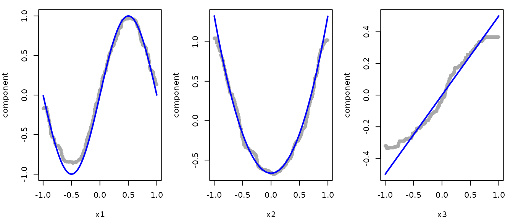
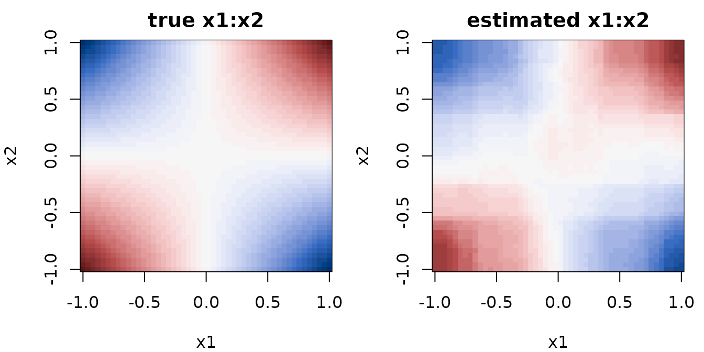

Getting Started with randomPlantedForest
Source:vignettes/randomPlantedForest.Rmd
randomPlantedForest.RmdrandomPlantedForest implements Random Planted Forest (Hiabu, Mammen & Meyer),
a directly interpretable tree ensemble. Its defining feature is that the
maximum order of interaction between predictors can be bounded via
max_interaction: the fitted model then decomposes exactly
into main effects, two-way interactions, and so on, a functional ANOVA
decomposition, with no post-hoc approximation needed.
Fitting a regression forest
To see what the model recovers, we simulate data where the true
components are known. The outcome depends on x1,
x2 and x3 through main effects of different
shapes and on x1 and x2 jointly through a
product interaction with x4 having no effect at all:
With uniform predictors on , each term has mean zero and the interaction has no main-effect part, so the terms are exactly the components the model is meant to estimate.
set.seed(1)
n <- 1000
sim <- data.frame(
x1 = runif(n, -1, 1),
x2 = runif(n, -1, 1),
x3 = runif(n, -1, 1),
x4 = runif(n, -1, 1)
)
true_effects <- list(
x1 = function(x) sin(pi * x),
x2 = function(x) 2 * (x^2 - 1 / 3),
x3 = function(x) x / 2
)
sim$y <- 1 +
true_effects$x1(sim$x1) +
true_effects$x2(sim$x2) +
true_effects$x3(sim$x3) +
2 * sim$x1 * sim$x2 +
rnorm(n, sd = 0.3)
rpfit <- rpf(y ~ ., data = sim, max_interaction = 2, ntrees = 50)
rpfit
#> ── Regression Random Planted Forest ────────────────────────────────────────────
#> Formula: `y ~ .`
#> 50 tree families with 30 splits each on 4 predictors, interactions to degree 2.
#> ℹ Forest is not purified.
#>
#> ── Tree growing
#> split_structure: leaves
#> split_try: 10
#> t_try: 0.4
#> max_candidates: 50
#> split_decay_rate: 0.1
#> delete_leaves: TRUE
#>
#> ℹ Fit using 1 thread, also the default for `predict()` and `purify()`.max_interaction = 2 restricts the forest to main effects
and two-way interactions. This is the central tuning choice of the
method: lower values give a more interpretable, more constrained model,
while max_interaction = 0 allows interactions of any order.
ntrees sets the number of tree families in the
ensemble.
Prediction works as usual:
predict(rpfit, new_data = head(sim))
#> # A tibble: 6 × 1
#> .pred
#> <dbl>
#> 1 -0.217
#> 2 0.0562
#> 3 1.27
#> 4 3.83
#> 5 1.17
#> 6 0.955Note that rpf() does not handle missing values: rows
containing NA must be imputed or removed beforehand (see
the recipes section below for one way to do this as part of
the model specification).
Decomposing predictions
Because the interaction order is bounded, the prediction function is a sum of low-dimensional components:
predict_components() returns exactly this decomposition:
an intercept and one column per main effect and interaction term,
evaluated on the supplied data. The forest is purified
internally to make the decomposition unique, which is why the print
method above reports the purification state.
components <- predict_components(rpfit, new_data = sim)
components$intercept
#> [1] 0.9862177
names(components$m)
#> [1] "x1" "x2" "x3" "x4" "x1:x2" "x1:x3" "x1:x4" "x2:x3" "x2:x4"
#> [10] "x3:x4"The components sum exactly to the model prediction:
pred_sum <- components$intercept + rowSums(components$m)
pred_direct <- predict(rpfit, new_data = sim)$.pred
all.equal(pred_sum, pred_direct)
#> [1] TRUEEach column of components$m is the isolated contribution
of one predictor (or one pair) to the prediction, on the scale of the
outcome. Their standard deviations give a simple importance measure: the
three main effects and the x1:x2 interaction dominate,
while x4 and the other interactions are close to zero, as
they should be.
round(sort(sapply(components$m, sd), decreasing = TRUE), 3)
#> x1:x2 x1 x2 x3 x2:x3 x1:x3 x4 x1:x4 x2:x4 x3:x4
#> 0.656 0.655 0.573 0.258 0.026 0.007 0.000 0.000 0.000 0.000The estimated main effects follow the true functions (blue lines). As with any tree-based model, they flatten out towards the edges of the data, where few observations are available to determine them.
op <- par(mfrow = c(1, 3), mar = c(4, 4, 1, 1))
for (v in names(true_effects)) {
ylim <- range(components$m[[v]], true_effects[[v]](sim[[v]]))
plot(
sim[[v]],
components$m[[v]],
pch = 20,
col = "darkgray",
ylim = ylim,
xlab = v,
ylab = "component"
)
curve(true_effects[[v]](x), add = TRUE, lwd = 2, col = "blue")
}
par(op)The interaction is a function of two variables, so it is shown as a
heatmap. We evaluate the estimated x1:x2 component on a
grid. Note x3 and x4 must be present in the
new data but do not affect this component.
grid_points <- seq(-1, 1, length.out = 50)
grid <- expand.grid(x1 = grid_points, x2 = grid_points, x3 = 0, x4 = 0)
estimated <- predict_components(rpfit, new_data = grid, predictors = c("x1", "x2"))$m[["x1:x2"]]
surfaces <- list(
true = outer(grid_points, grid_points, function(x1, x2) 2 * x1 * x2),
estimated = matrix(estimated, nrow = length(grid_points))
)
zlim <- c(-1, 1) * max(abs(unlist(surfaces)))
op <- par(mfrow = c(1, 2), mar = c(4, 4, 2, 1))
for (s in names(surfaces)) {
image(
grid_points,
grid_points,
surfaces[[s]],
zlim = zlim,
col = hcl.colors(51, "Blue-Red 3"),
xlab = "x1",
ylab = "x2",
main = paste(s, "x1:x2")
)
}
par(op)The plots above are drawn manually from
predict_components() for illustration. The glex package
provides ggplot2 versions of them: glex()
computes the decomposition for a fitted rpf object, and
plot_main_effect() and plot_twoway_effects()
draw main effects and two-way interactions.
Classification
For a factor outcome, rpf() automatically fits a
classification forest. We illustrate with the penguins data
from palmerpenguins, removing missing values first.
Binary
penguins <- na.omit(palmerpenguins::penguins)
rpfit_sex <- rpf(sex ~ ., data = penguins, ntrees = 50)
predict(rpfit_sex, head(penguins), type = "prob")
#> # A tibble: 6 × 2
#> .pred_female .pred_male
#> <dbl> <dbl>
#> 1 0.0591 0.941
#> 2 0.806 0.194
#> 3 0.995 0.00546
#> 4 0.998 0.00219
#> 5 0.0243 0.976
#> 6 0.992 0.00801
predict(rpfit_sex, head(penguins), type = "class")
#> # A tibble: 6 × 1
#> .pred_class
#> <fct>
#> 1 male
#> 2 female
#> 3 female
#> 4 female
#> 5 male
#> 6 femaleWith the default loss = "exponential" (or
"logit"), type = "link" additionally gives raw
predictions on the log-odds scale.
Multiclass
Multiclass classification works the same way: probability predictions contain one column per class:
rpfit_species <- rpf(species ~ ., data = penguins, ntrees = 50)
predict(rpfit_species, head(penguins), type = "prob")
#> # A tibble: 6 × 3
#> .pred_Adelie .pred_Chinstrap .pred_Gentoo
#> <dbl> <dbl> <dbl>
#> 1 1.000 0.00000000457 1.35e-11
#> 2 1.000 0.0000000237 5.63e-11
#> 3 1.000 0.0000000217 3.63e-11
#> 4 1.000 0.00000000188 7.16e-12
#> 5 1.000 0.00000000200 8.66e-12
#> 6 1.000 0.0000000225 4.10e-11
predict(rpfit_species, head(penguins), type = "class")
#> # A tibble: 6 × 1
#> .pred_class
#> <fct>
#> 1 Adelie
#> 2 Adelie
#> 3 Adelie
#> 4 Adelie
#> 5 Adelie
#> 6 AdelieThe default loss for classification is "exponential",
which gives proper probability estimates. "logit" gives
similar results but is slower, while "L1" and
"L2" fit class indicators directly and do not yield proper
probabilities. Note that with loss = "logit", multiclass
models are fit on a reference-class (log-odds) scale, so link
predictions and components have one column less than there are classes:
see ?predict.rpf for details.
Using recipes
rpf() also accepts a recipes recipe
in place of a formula, so preprocessing can be bundled with the model
specification. This makes it easy to add preprocessing steps, such as
imputing missing values, which rpf() itself does not
accept:
library(recipes)
# rows with a missing outcome still need to be dropped by hand
peng_raw <- subset(palmerpenguins::penguins, !is.na(body_mass_g))
rec <- recipe(body_mass_g ~ ., data = peng_raw) |>
step_impute_median(all_numeric_predictors()) |>
step_impute_mode(all_nominal_predictors())
rpfit_rec <- rpf(rec, data = peng_raw, ntrees = 50)
predict(rpfit_rec, head(peng_raw))
#> # A tibble: 6 × 1
#> .pred
#> <dbl>
#> 1 3801.
#> 2 3491.
#> 3 3572.
#> 4 3482.
#> 5 4006.
#> 6 3422.The preprocessing steps are stored with the model and applied
automatically in predict().
Saving and restoring models
An rpf object holds its forest in an external pointer to
a C++ object, which saveRDS() cannot preserve, meaning that
a naively saved and restored model is not usable:
tmp <- tempfile(fileext = ".rds")
saveRDS(rpfit, tmp)
broken <- readRDS(tmp)
rpf_is_valid(broken)
#> [1] FALSE
predict(broken, head(sim))
#> Error in `predict()`:
#> ! The C++ forest behind this <rpf> object is gone.
#> ℹ Most likely it was saved with `saveRDS()` and restored with `readRDS()`.
#> ℹ Use `blob <- rpf_marshal(x)` before saving and `rpf_unmarshal(blob)` after
#> loading, see `?rpf_marshal()`.Use rpf_marshal() to convert the model into a plain R
list before saving, and rpf_unmarshal() after loading:
saveRDS(rpf_marshal(rpfit), tmp)
restored <- rpf_unmarshal(readRDS(tmp))
all.equal(
predict(restored, head(sim)),
predict(rpfit, head(sim))
)
#> [1] TRUEAlternatively, a bundle method
wrapping the same mechanism is available via
bundle::bundle() and bundle::unbundle().